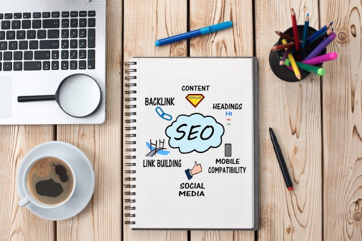

Search Engine Optimization
The dominance of mobile internet use means that users are searching for the right business as
they
travel, shop, or sit on their couch at home. Search Engine Optimization (SEO) allows you to
increase
your visibility and find the right customers for your business.
Online Reputation Management
The web is full of opinions, and some of these can be negative. Social media allows anyone with
an
internet connection to say whatever they want about your business. Online Reputation Management
gives
you the control over what potential customers see when they search for your business.